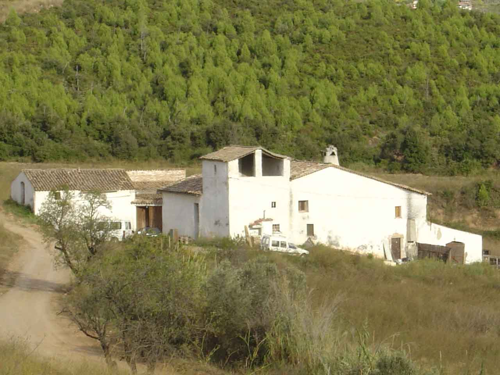
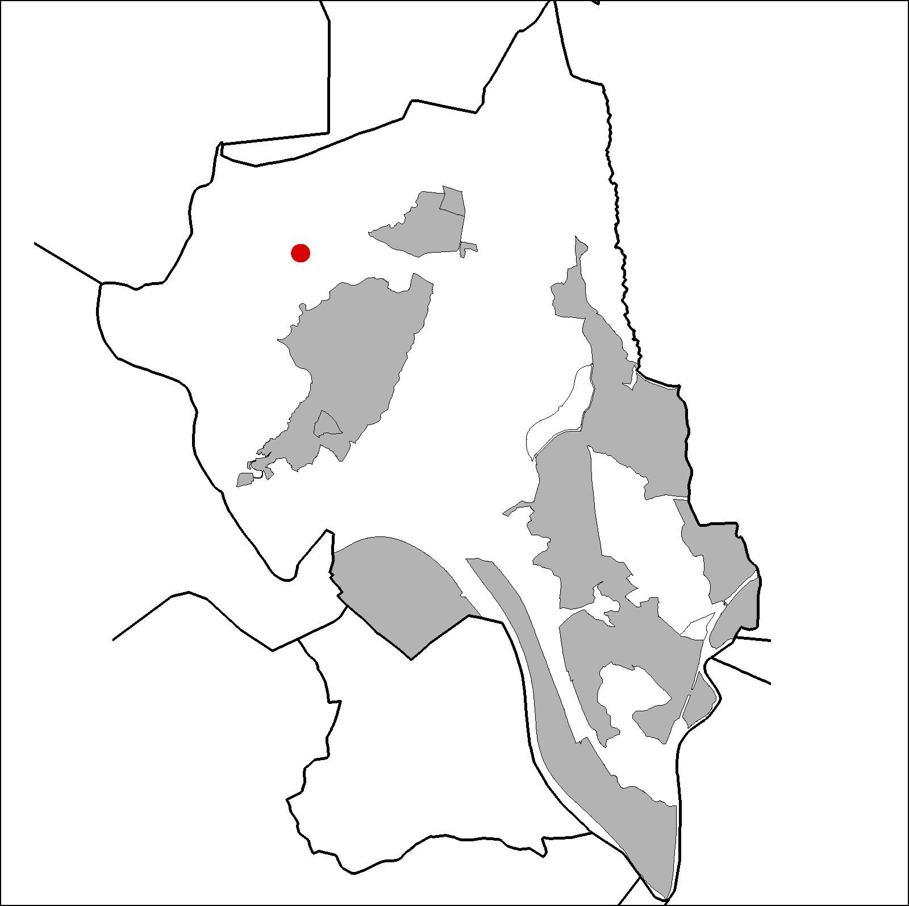

|  |  |
Nom de l’element: Can Pastallé
Clau d’identificació: B.1.13
Nucli o indret: Oest de la Serra de l’Ametller.
UTM: X= 412.208, Y= 4.594.832.
Referència cadastral: Poligon 14, parcel·la 9502 (000301900DF19C0001XP)
Règim del sòl: Sòl no urbanitzable.
1.1. Època de construcció i tipologia:
Masia catalana del 1491 de planta baixa i planta pis, de planta quadrada al cos principal. Els murs són de mamposteria i conglomerats de terra i pedres, i també obra de maó. Hi ha addicionat un cos de coberta a una aigua, de fusta i teules. A la zona est hi ha una edificació de dues aigües. S’ha creat un pati interior. Les obertures són petites i desordenades. Hi ha un cos a l’extrem sudoest de la façana que puja una planta més que el cos principal amb una cobertura autònoma i grans obertures al sud en forma inclinada de la coberta. Hi ha una inscripció de 1830 sobre la llinda de fusta de la portalada d’accés al pati interior. Al rebedor del cos principal hi ha unes rajoles amb una inscripció de l’any 1491.
1.2. Estat de conservació:
Mitjà. Les façanes estan en un bon estat de conservació. L’estructura portant, els forjats, les voltes, les cobertes, el paviment, les obertures i els acabats interiors es troben en un estat de conservació mitjà. Presenta un cert grau d’humitats.
1.3. Ús actual:
Sense ús.
1.4. Accés:
Accés fàcil des del Camí de Can Pastallé a Can Santeugini o des del Camí Nou de Martorell a Ullastrell.
Masia catalana del 1491, composta per vàries edificacions.
3.1. Usos admesos:
Habitatge rural (màxim 3 habitatges); residencial; hoteler (excepte aparthotel; i amb un màxim de 30 places); oficines i serveis; industria vinculada a productes del camp (industrial, categoria 1ª); educatiu; recreatiu cultural i social; recreatiu de restauració; esportiu.
3.2. Condicions d’ordenació:
Segons Pla Especial a redactar.
3.3. Accés i serveis:
Camí de Can Pastallé a Can Santeugini o des del Camí Nou de Martorell a Ullastrell.
BCIL (Bé Cultural d’Interes Local)